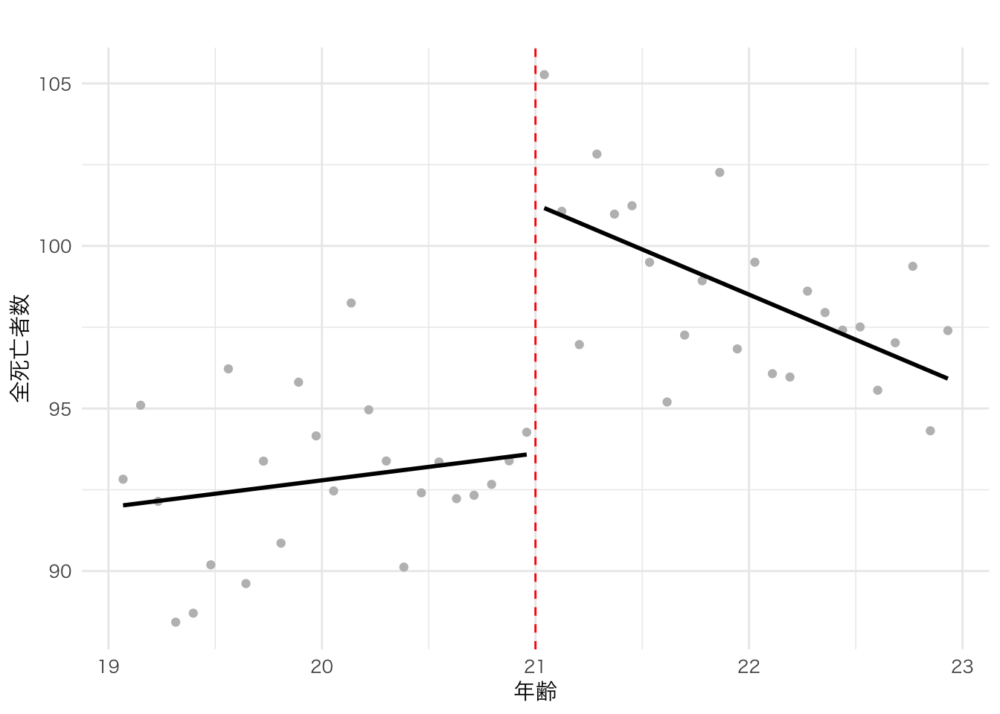
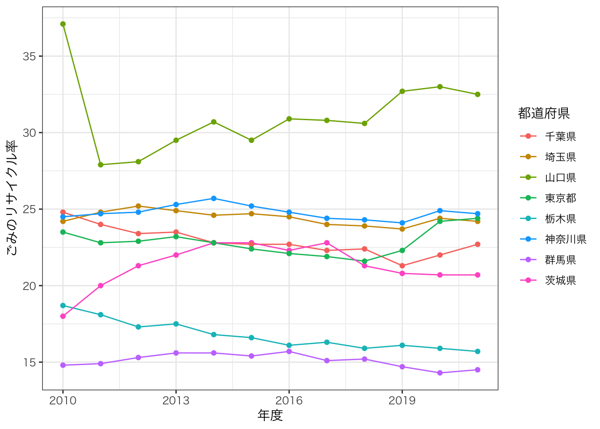
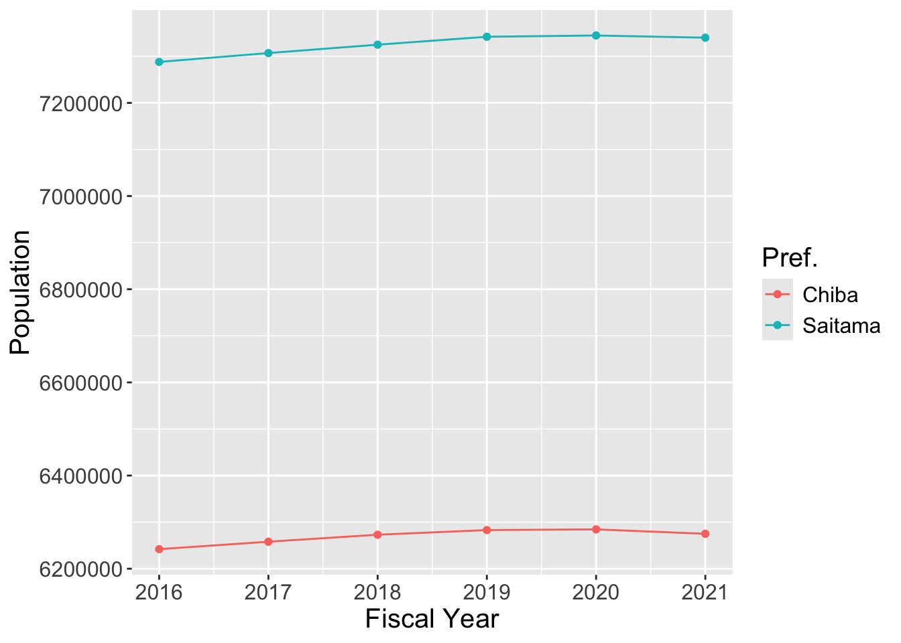
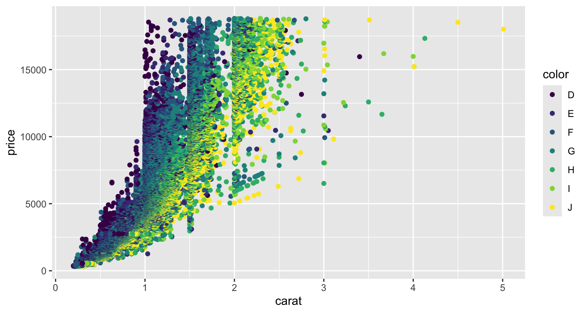
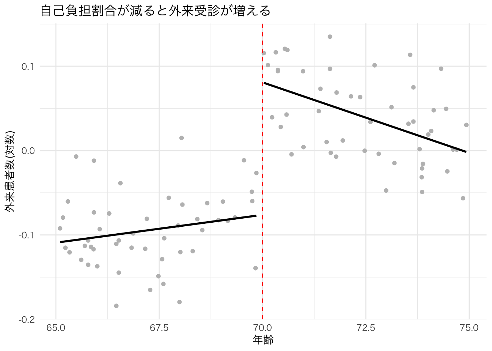
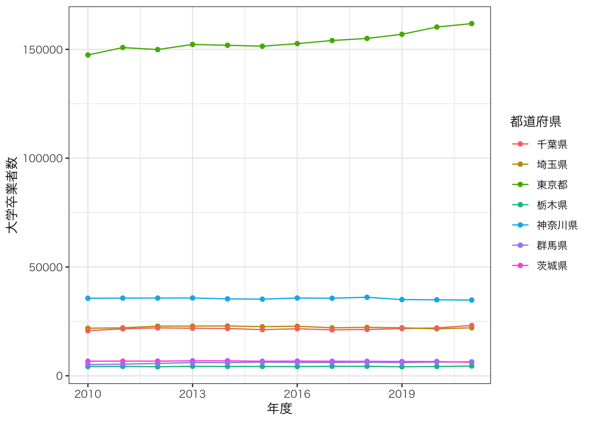

Chapter 17 描画課題のレビュー
17.1 Yuma Ikeda
17.1.1 オリジナルコード
library(tidyverse)
library(readxl)
library(readr)
data_ssdse<-read_csv("data/SSDSE-B-2024.csv",locale=locale(encoding="cp932"),skip=1)
names(data_ssdse)## [1] "年度" "地域コード" "都道府県"
## [4] "総人口" "総人口（男）" "総人口（女）"
## [7] "日本人人口" "日本人人口（男）" "日本人人口（女）"
## [10] "15歳未満人口" "15歳未満人口（男）" "15歳未満人口（女）"
## [13] "15〜64歳人口" "15〜64歳人口（男）" "15〜64歳人口（女）"
## [16] "65歳以上人口" "65歳以上人口（男）" "65歳以上人口（女）"
## [19] "出生数" "出生数（男）" "出生数（女）"
## [22] "合計特殊出生率" "死亡数" "死亡数（男）"
## [25] "死亡数（女）" "転入者数（日本人移動者）" "転入者数（日本人移動者）（男）"
## [28] "転入者数（日本人移動者）（女）" "転出者数（日本人移動者）" "転出者数（日本人移動者）（男）"
## [31] "転出者数（日本人移動者）（女）" "婚姻件数" "離婚件数"
## [34] "年平均気温" "最高気温（日最高気温の月平均の最高値）" "最低気温（日最低気温の月平均の最低値）"
## [37] "降水日数（年間）" "降水量（年間）" "着工建築物数"
## [40] "着工建築物床面積" "旅館営業施設数（ホテルを含む）" "旅館営業施設客室数（ホテルを含む）"
## [43] "標準価格（平均価格）（住宅地）" "標準価格（平均価格）（商業地）" "幼稚園数"
## [46] "幼稚園教員数" "幼稚園在園者数" "小学校数"
## [49] "小学校教員数" "小学校児童数" "中学校数"
## [52] "中学校教員数" "中学校生徒数" "中学校卒業者数"
## [55] "中学校卒業者のうち進学者数" "高等学校数" "高等学校教員数"
## [58] "高等学校生徒数" "高等学校卒業者数" "高等学校卒業者のうち進学者数"
## [61] "短期大学数" "大学数" "短期大学教員数"
## [64] "大学教員数" "短期大学学生数" "大学学生数"
## [67] "短期大学卒業者数" "短期大学卒業者のうち進学者数" "大学卒業者数"
## [70] "大学卒業者のうち進学者数" "専修学校数" "各種学校数"
## [73] "専修学校生徒数" "各種学校生徒数" "新規求職申込件数（一般）"
## [76] "月間有効求職者数（一般）" "月間有効求人数（一般）" "充足数（一般）"
## [79] "就職件数（一般）" "一般旅券発行件数" "延べ宿泊者数"
## [82] "外国人延べ宿泊者数" "着工新設住宅戸数" "着工新設持家数"
## [85] "着工新設貸家数" "着工新設分譲住宅数" "着工新設住宅床面積"
## [88] "着工新設持家床面積" "着工新設分譲住宅床面積" "着工新設貸家床面積"
## [91] "ごみ総排出量（総量）" "1人1日当たりの排出量" "ごみのリサイクル率"
## [94] "一般病院数" "一般診療所数" "歯科診療所数"
## [97] "保育所等数" "保育所等定員数" "保育所等利用待機児童数"
## [100] "保育所等在所児数" "保育所等保育士数" "消費支出（二人以上の世帯）"
## [103] "食料費（二人以上の世帯）" "住居費（二人以上の世帯）" "光熱・水道費（二人以上の世帯）"
## [106] "家具・家事用品費（二人以上の世帯）" "被服及び履物費（二人以上の世帯）" "保健医療費（二人以上の世帯）"
## [109] "交通・通信費（二人以上の世帯）" "教育費（二人以上の世帯）" "教養娯楽費（二人以上の世帯）"
## [112] "その他の消費支出（二人以上の世帯）"data_kanto <- data_ssdse |>
filter(都道府県 %in% c("東京都","神奈川県","千葉県","埼玉県","茨城県","栃木県","群馬県"))
plot_f_rate <- ggplot(data=data_kanto,aes(x=年度, y=大学卒業者数, col=都道府県)) +
geom_line() +
geom_point() +
theme_bw(base_family = "HiraKakuPro-W3")
plot_f_rate
plot_f_rate <- ggplot(data=data_kanto,aes(x=年度, y=大学卒業者数, col=都道府県)) +
geom_line() +
geom_point() +
theme_bw(base_family = "HiraKakuPro-W3") +
labs(x="Fiscal Year", y="Number Of University Graduates", col="Pref.") +
scale_color_discrete(breaks = c("千葉県","埼玉県","東京都","栃木県","神奈川県","群馬県","茨城県"),
labels = c("Chiba","Saitama","Tokyo","Tochigi","Kanagawa","Gumma","Ibaragi")) +
theme(text = element_text(size=15))
plot_f_rate
17.2 Yugo Kaneko
17.2.1 オリジナルコード
#データの読み込みと変数名の確認
data_ssdse<- read_csv("data/SSDSE-B-2024.csv",locale=locale(encoding="CP932")
,skip=1)
names(data_ssdse)## [1] "年度" "地域コード" "都道府県"
## [4] "総人口" "総人口（男）" "総人口（女）"
## [7] "日本人人口" "日本人人口（男）" "日本人人口（女）"
## [10] "15歳未満人口" "15歳未満人口（男）" "15歳未満人口（女）"
## [13] "15〜64歳人口" "15〜64歳人口（男）" "15〜64歳人口（女）"
## [16] "65歳以上人口" "65歳以上人口（男）" "65歳以上人口（女）"
## [19] "出生数" "出生数（男）" "出生数（女）"
## [22] "合計特殊出生率" "死亡数" "死亡数（男）"
## [25] "死亡数（女）" "転入者数（日本人移動者）" "転入者数（日本人移動者）（男）"
## [28] "転入者数（日本人移動者）（女）" "転出者数（日本人移動者）" "転出者数（日本人移動者）（男）"
## [31] "転出者数（日本人移動者）（女）" "婚姻件数" "離婚件数"
## [34] "年平均気温" "最高気温（日最高気温の月平均の最高値）" "最低気温（日最低気温の月平均の最低値）"
## [37] "降水日数（年間）" "降水量（年間）" "着工建築物数"
## [40] "着工建築物床面積" "旅館営業施設数（ホテルを含む）" "旅館営業施設客室数（ホテルを含む）"
## [43] "標準価格（平均価格）（住宅地）" "標準価格（平均価格）（商業地）" "幼稚園数"
## [46] "幼稚園教員数" "幼稚園在園者数" "小学校数"
## [49] "小学校教員数" "小学校児童数" "中学校数"
## [52] "中学校教員数" "中学校生徒数" "中学校卒業者数"
## [55] "中学校卒業者のうち進学者数" "高等学校数" "高等学校教員数"
## [58] "高等学校生徒数" "高等学校卒業者数" "高等学校卒業者のうち進学者数"
## [61] "短期大学数" "大学数" "短期大学教員数"
## [64] "大学教員数" "短期大学学生数" "大学学生数"
## [67] "短期大学卒業者数" "短期大学卒業者のうち進学者数" "大学卒業者数"
## [70] "大学卒業者のうち進学者数" "専修学校数" "各種学校数"
## [73] "専修学校生徒数" "各種学校生徒数" "新規求職申込件数（一般）"
## [76] "月間有効求職者数（一般）" "月間有効求人数（一般）" "充足数（一般）"
## [79] "就職件数（一般）" "一般旅券発行件数" "延べ宿泊者数"
## [82] "外国人延べ宿泊者数" "着工新設住宅戸数" "着工新設持家数"
## [85] "着工新設貸家数" "着工新設分譲住宅数" "着工新設住宅床面積"
## [88] "着工新設持家床面積" "着工新設分譲住宅床面積" "着工新設貸家床面積"
## [91] "ごみ総排出量（総量）" "1人1日当たりの排出量" "ごみのリサイクル率"
## [94] "一般病院数" "一般診療所数" "歯科診療所数"
## [97] "保育所等数" "保育所等定員数" "保育所等利用待機児童数"
## [100] "保育所等在所児数" "保育所等保育士数" "消費支出（二人以上の世帯）"
## [103] "食料費（二人以上の世帯）" "住居費（二人以上の世帯）" "光熱・水道費（二人以上の世帯）"
## [106] "家具・家事用品費（二人以上の世帯）" "被服及び履物費（二人以上の世帯）" "保健医療費（二人以上の世帯）"
## [109] "交通・通信費（二人以上の世帯）" "教育費（二人以上の世帯）" "教養娯楽費（二人以上の世帯）"
## [112] "その他の消費支出（二人以上の世帯）"#西日本主要府県に限定した、データの表示
data_nishinihonsyuyoufukenn<- data_ssdse|>
filter(都道府県 %in% c("大阪府","京都府","兵庫県","福岡県","愛知県"))
## long型に変換。
data_nishinihonnsyuyoufukenn_long <- data_nishinihonsyuyoufukenn |>
pivot_longer(cols=c("中学校数"))
#キャンバスの用意
plot_data_nishinihonnsyuyoufukenn<-ggplot()
print(plot_data_nishinihonnsyuyoufukenn) 
#グラフの描画
plot_f_rate<- ggplot(data=data_nishinihonnsyuyoufukenn_long, mapping=aes(x=年度, y=大学数,col=都道府県))+
geom_line()+
geom_point()+
labs(x="Fiscal Year", y="THE NUMBER OF UNIVERSITIES", col="Pref."
,title="西日本主要府県の大学数の推移",subtitle="データ元：https://www.nstac.go.jp/use/literacy/ssdse/#SSDSE-Bhttps://www.nstac.go.jp/use/literacy/ssdse/#SSDSE-B") +
scale_color_discrete(breaks = c("大阪府","京都府","兵庫県","福岡県","愛知県"),
labels = c("osaka","kyoto","hyogo","fukuoka","aichi")) +
theme(text = element_text(size=15)) +
theme_gray(base_family = "HiraKakuPro-W3") # Mac用に追加
plot_f_rate17.3 Yui Kunimatsu
17.3.1 オリジナルコード
library(tidyverse)
fs::dir_create("data")
download.file("download.file/Users/yuinya/abezemi/SSDSE.xlsx",
destfile="SSDSE.xlsx")
data_634 <- readxl::read_excel("SSDSE.xlsx/SSDSE.xlsx") # long型(tidy data)に変換
data_634_long <- data_634 |>
# long型に変換。1年〜４年の列(cols)を学生数という列にvalues_toでまとめる。各行に何年生かnames_toで記録する。
pivot_longer(cols=c(2010:2021),names_to ="年度",values_to = "合計特殊出生率")
plot_634 <- ggplot()
print(plot_634)plot_634 <- ggplot() +
geom_bar(data=data_634_long, mapping=aes(x=年度, y=合計特殊出生率),stat="identity") # <- 追加！
plot_634 <- ggplot() +
geom_bar(data=data_634_long, mapping=aes(x=年度, y=合計特殊出生率),stat="identity") +
theme_grey(base_family="HiraKakuPro-W3") # <- 追加！
print(plot_634)
17.4 Kotaro Mezaki
## [1] "/Users/keita/Library/CloudStorage/Dropbox/Teaching/regression_tutorial"data_ssdse <- read_csv("data/SSDSE-B-2024.csv",
locale=locale(encoding="CP932"),
skip=1)
# 変数名を確認
names(data_ssdse)## [1] "年度" "地域コード" "都道府県"
## [4] "総人口" "総人口（男）" "総人口（女）"
## [7] "日本人人口" "日本人人口（男）" "日本人人口（女）"
## [10] "15歳未満人口" "15歳未満人口（男）" "15歳未満人口（女）"
## [13] "15〜64歳人口" "15〜64歳人口（男）" "15〜64歳人口（女）"
## [16] "65歳以上人口" "65歳以上人口（男）" "65歳以上人口（女）"
## [19] "出生数" "出生数（男）" "出生数（女）"
## [22] "合計特殊出生率" "死亡数" "死亡数（男）"
## [25] "死亡数（女）" "転入者数（日本人移動者）" "転入者数（日本人移動者）（男）"
## [28] "転入者数（日本人移動者）（女）" "転出者数（日本人移動者）" "転出者数（日本人移動者）（男）"
## [31] "転出者数（日本人移動者）（女）" "婚姻件数" "離婚件数"
## [34] "年平均気温" "最高気温（日最高気温の月平均の最高値）" "最低気温（日最低気温の月平均の最低値）"
## [37] "降水日数（年間）" "降水量（年間）" "着工建築物数"
## [40] "着工建築物床面積" "旅館営業施設数（ホテルを含む）" "旅館営業施設客室数（ホテルを含む）"
## [43] "標準価格（平均価格）（住宅地）" "標準価格（平均価格）（商業地）" "幼稚園数"
## [46] "幼稚園教員数" "幼稚園在園者数" "小学校数"
## [49] "小学校教員数" "小学校児童数" "中学校数"
## [52] "中学校教員数" "中学校生徒数" "中学校卒業者数"
## [55] "中学校卒業者のうち進学者数" "高等学校数" "高等学校教員数"
## [58] "高等学校生徒数" "高等学校卒業者数" "高等学校卒業者のうち進学者数"
## [61] "短期大学数" "大学数" "短期大学教員数"
## [64] "大学教員数" "短期大学学生数" "大学学生数"
## [67] "短期大学卒業者数" "短期大学卒業者のうち進学者数" "大学卒業者数"
## [70] "大学卒業者のうち進学者数" "専修学校数" "各種学校数"
## [73] "専修学校生徒数" "各種学校生徒数" "新規求職申込件数（一般）"
## [76] "月間有効求職者数（一般）" "月間有効求人数（一般）" "充足数（一般）"
## [79] "就職件数（一般）" "一般旅券発行件数" "延べ宿泊者数"
## [82] "外国人延べ宿泊者数" "着工新設住宅戸数" "着工新設持家数"
## [85] "着工新設貸家数" "着工新設分譲住宅数" "着工新設住宅床面積"
## [88] "着工新設持家床面積" "着工新設分譲住宅床面積" "着工新設貸家床面積"
## [91] "ごみ総排出量（総量）" "1人1日当たりの排出量" "ごみのリサイクル率"
## [94] "一般病院数" "一般診療所数" "歯科診療所数"
## [97] "保育所等数" "保育所等定員数" "保育所等利用待機児童数"
## [100] "保育所等在所児数" "保育所等保育士数" "消費支出（二人以上の世帯）"
## [103] "食料費（二人以上の世帯）" "住居費（二人以上の世帯）" "光熱・水道費（二人以上の世帯）"
## [106] "家具・家事用品費（二人以上の世帯）" "被服及び履物費（二人以上の世帯）" "保健医療費（二人以上の世帯）"
## [109] "交通・通信費（二人以上の世帯）" "教育費（二人以上の世帯）" "教養娯楽費（二人以上の世帯）"
## [112] "その他の消費支出（二人以上の世帯）"data_kanto_yamaguti<- data_ssdse |>
filter(都道府県 %in% c("東京都","神奈川県","千葉県","埼玉県","茨城県","栃木県","群馬県","山口県"))
# %in% は 「都道府県というカテゴリ変数が、c()の中のいずれかに該当すれば真、という命題を表す。
plot_f_rate <- ggplot(data=data_kanto_yamaguti,aes(x=年度, y=ごみのリサイクル率, col=都道府県)) +
geom_line() +
geom_point() +
theme_bw(base_family = "HiraKakuPro-W3")
plot_f_rate
plot_f_rate <- ggplot(data=data_kanto_yamaguti,aes(x=年度, y=ごみのリサイクル率, col=都道府県)) +
geom_line() +
geom_point() +
theme_bw(base_family = "HiraKakuPro-W3") +
labs(x="Year", y="Garbage recycling rate", col="Pref.") +
scale_color_discrete(breaks = c("千葉県","埼玉県","東京都","栃木県","神奈川県","群馬県","茨城県","山口県"),
labels = c("Chiba","Saitama","Tokyo","Tochigi","Kanagawa","Gumma","Ibaragi","yamaguti")) +
theme(text = element_text(size=15))
plot_f_rate17.5 Rei Shimizu
library(tidyverse)
library(readxl)
data_pop <- read_csv("data/SSDSE-B-2024.csv",locale=locale(encoding="CP932"),
skip=1)
data_pop_fil<-data_pop|>
filter( 都道府県 %in% c("千葉県","埼玉県"),
年度%in%c("2016","2017","2018","2019","2020","2021"))
plot_pop_fil<-ggplot(data=data_pop_fil,mapping=aes(x=年度,y=総人口,col=都道府県))+
geom_line()+
geom_point()+
labs(x="Fiscal Year", y="Population", col="Pref.") +
scale_color_discrete(breaks = c("千葉県","埼玉県"),
labels = c("Chiba","Saitama"))+
theme(text = element_text(size=15))
print(plot_pop_fil)
data_pop_fil2<-data_pop|>
filter( 都道府県 %in% c("長野県","福島県"),
年度%in%c("2016","2017","2018","2019","2020","2021"))
plot_pop_fil2<-ggplot(data=data_pop_fil2,mapping=aes(x=年度,y=総人口,col=都道府県))+
geom_line()+
geom_point()+
labs(x="Fiscal Year", y="Population", col="Pref.") +
scale_color_discrete(breaks = c("長野県","福島県"),
labels = c("Nagano","Fukusima"))+
theme(text = element_text(size=15))
print(plot_pop_fil2)
17.5.1 フィードバック
基本的な描画はできています。 人口のように数値が大きい場合は、一定の数で割って、単位を変更すると見やすいです。
plot_pop_fil2<-ggplot(data=data_pop_fil2,mapping=aes(x=年度,y=総人口/1000,col=都道府県))+ # <- ここを変更
geom_line()+
geom_point()+
labs(x="Fiscal Year", y="Population (Thousands)", col="Pref.") + # <- ここを変更
scale_color_discrete(breaks = c("長野県","福島県"),
labels = c("Nagano","Fukusima"))+
theme(text = element_text(size=15))
print(plot_pop_fil2)
17.6 Yuta Shimizu
plot635 <- ggplot()+
geom_bar(data=data635,mapping=aes(x=reorder(都道府県,カップ麺),y=カップ麺),stat="identity")+
labs(fill="",x="",y="",
title="県別年間カップ麺消費量",
subtitle="2024年4月24日公開",
caption = "データ元SSDSE-家計消費" )
plot635 <- ggplot()+
geom_bar(data=data635,mapping=aes(x=カップ麺,y=都道府県),stat="identity")+
labs(fill="",x="",y="",
title="県別年間カップ麺消費量",
subtitle="2024年4月24日公開",
caption = "データ元SSDSE-家計消費" ) +
theme_grey(base_family = "HiraKakuPro-W3") # Mac用に追加
plot635
17.6.1 フィードバック
基本的な描画はできています。 英語で発表するので、英語に直しましょう。
コメントにあったカテゴリの順番を変える方法は、以下の通りです。 アイデアとしては、データにおけるカテゴリの順番を変えるという発想です。
data635 <- data635 |>
# mutate()ですでにある都道府県の列を更新する
# カテゴリの順番は、fct_reorderで変更することができる。
# これはtidyverseに入っているforcatというパッケージに入っている関数。
mutate(都道府県 = fct_reorder(都道府県, カップ麺))
plot635 <- ggplot()+
geom_bar(data=data635,mapping=aes(x=カップ麺,y=都道府県),stat="identity")+
labs(fill="",x="",y="",
title="県別年間カップ麺消費量",
subtitle="2024年4月24日公開",
caption = "データ元SSDSE-家計消費" ) +
theme_grey(base_family = "HiraKakuPro-W3") + # Mac用に追加
theme(axis.text.y = element_text(size=7)) # themeの中で、axis.text.yという項目のtextという要素で、文字サイズを変えることが可能。
plot635
17.7 Hyuga Yamanouchi
library(tidyverse)
data_ssdse <- read_csv("data/SSDSE-B-2024.csv",
locale=locale(encoding="CP932"),
skip=1)
data_ssdse## # A tibble: 600 × 112
## 年度 地域コード 都道府県 総人口 `総人口（男）` `総人口（女）` 日本人人口 `日本人人口（男）` `日本人人口（女）` `15歳未満人口` `15歳未満人口（男）`
## <dbl> <chr> <chr> <dbl> <dbl> <dbl> <dbl> <dbl> <dbl> <dbl> <dbl>
## 1 2021 R01000 北海道 5183000 2446000 2737000 5147000 2429000 2717000 544000 278000
## 2 2020 R01000 北海道 5224614 2465088 2759526 5151366 2429697 2721669 555804 284510
## 3 2019 R01000 北海道 5259000 2480000 2780000 5223000 2464000 2759000 565000 289000
## 4 2018 R01000 北海道 5293000 2495000 2798000 5262000 2482000 2780000 577000 295000
## 5 2017 R01000 北海道 5325000 2510000 2815000 5298000 2499000 2799000 588000 301000
## 6 2016 R01000 北海道 5355000 2523000 2831000 5330000 2514000 2817000 600000 306000
## 7 2015 R01000 北海道 5381733 2537089 2844644 5348768 2522980 2825788 608296 310387
## 8 2014 R01000 北海道 5410000 2551000 2859000 5390000 2543000 2847000 621000 316000
## 9 2013 R01000 北海道 5438000 2565000 2873000 5419000 2558000 2861000 630000 321000
## 10 2012 R01000 北海道 5465000 2580000 2886000 5446000 2572000 2874000 640000 326000
## # ℹ 590 more rows
## # ℹ 101 more variables: `15歳未満人口（女）` <dbl>, `15〜64歳人口` <dbl>, `15〜64歳人口（男）` <dbl>, `15〜64歳人口（女）` <dbl>, `65歳以上人口` <dbl>,
## # `65歳以上人口（男）` <dbl>, `65歳以上人口（女）` <dbl>, 出生数 <dbl>, `出生数（男）` <dbl>, `出生数（女）` <dbl>, 合計特殊出生率 <dbl>, 死亡数 <dbl>,
## # `死亡数（男）` <dbl>, `死亡数（女）` <dbl>, `転入者数（日本人移動者）` <dbl>, `転入者数（日本人移動者）（男）` <dbl>,
## # `転入者数（日本人移動者）（女）` <dbl>, `転出者数（日本人移動者）` <dbl>, `転出者数（日本人移動者）（男）` <dbl>, `転出者数（日本人移動者）（女）` <dbl>,
## # 婚姻件数 <dbl>, 離婚件数 <dbl>, 年平均気温 <dbl>, `最高気温（日最高気温の月平均の最高値）` <dbl>, `最低気温（日最低気温の月平均の最低値）` <dbl>,
## # `降水日数（年間）` <dbl>, `降水量（年間）` <chr>, 着工建築物数 <dbl>, 着工建築物床面積 <dbl>, `旅館営業施設数（ホテルを含む）` <dbl>, …data_ssdse_kanto<-data_ssdse|>
filter(都道府県%in% c("東京都","神奈川県","埼玉県","千葉県","茨城県","栃木県","群馬県"))
data_ssdse_kanto## # A tibble: 84 × 112
## 年度 地域コード 都道府県 総人口 `総人口（男）` `総人口（女）` 日本人人口 `日本人人口（男）` `日本人人口（女）` `15歳未満人口` `15歳未満人口（男）`
## <dbl> <chr> <chr> <dbl> <dbl> <dbl> <dbl> <dbl> <dbl> <dbl> <dbl>
## 1 2021 R08000 茨城県 2852000 1423000 1428000 2785000 1389000 1396000 328000 168000
## 2 2020 R08000 茨城県 2867009 1430976 1436033 2763432 1378266 1385166 333741 171136
## 3 2019 R08000 茨城県 2879000 1437000 1442000 2818000 1406000 1412000 342000 175000
## 4 2018 R08000 茨城県 2892000 1443000 1449000 2836000 1415000 1421000 349000 179000
## 5 2017 R08000 茨城県 2902000 1448000 1454000 2852000 1422000 1429000 355000 182000
## 6 2016 R08000 茨城県 2910000 1451000 1459000 2864000 1428000 1436000 361000 185000
## 7 2015 R08000 茨城県 2916976 1453594 1463382 2862997 1428192 1434805 364351 186926
## 8 2014 R08000 茨城県 2927000 1458000 1469000 2887000 1439000 1448000 376000 193000
## 9 2013 R08000 茨城県 2937000 1464000 1474000 2899000 1446000 1453000 382000 196000
## 10 2012 R08000 茨城県 2947000 1469000 1478000 2910000 1452000 1459000 388000 199000
## # ℹ 74 more rows
## # ℹ 101 more variables: `15歳未満人口（女）` <dbl>, `15〜64歳人口` <dbl>, `15〜64歳人口（男）` <dbl>, `15〜64歳人口（女）` <dbl>, `65歳以上人口` <dbl>,
## # `65歳以上人口（男）` <dbl>, `65歳以上人口（女）` <dbl>, 出生数 <dbl>, `出生数（男）` <dbl>, `出生数（女）` <dbl>, 合計特殊出生率 <dbl>, 死亡数 <dbl>,
## # `死亡数（男）` <dbl>, `死亡数（女）` <dbl>, `転入者数（日本人移動者）` <dbl>, `転入者数（日本人移動者）（男）` <dbl>,
## # `転入者数（日本人移動者）（女）` <dbl>, `転出者数（日本人移動者）` <dbl>, `転出者数（日本人移動者）（男）` <dbl>, `転出者数（日本人移動者）（女）` <dbl>,
## # 婚姻件数 <dbl>, 離婚件数 <dbl>, 年平均気温 <dbl>, `最高気温（日最高気温の月平均の最高値）` <dbl>, `最低気温（日最低気温の月平均の最低値）` <dbl>,
## # `降水日数（年間）` <dbl>, `降水量（年間）` <chr>, 着工建築物数 <dbl>, 着工建築物床面積 <dbl>, `旅館営業施設数（ホテルを含む）` <dbl>, …plot_ssdse_applicants<-ggplot(data=data_ssdse_kanto,aes(x=年度,y=`月間有効求職者数（一般）`,col=都道府県))+
geom_line()+
geom_point()+
theme_bw(base_family = "HirakakuPro-W3")+
labs(x="Fiscal Year",y="Total Job Applicants",col="Pref.")+
scale_color_discrete(breaks=c("東京都","神奈川県","埼玉県","千葉県","茨城県","栃木県","群馬県"),
labels=c("Tokyo","Kanagawa","Saitama","Chiba","Ibaraki","Tochigi","Gunma"))+
theme(text=element_text(size=10))
plot_ssdse_applicants
17.8 Jinto Eguro
library(tidyverse)
library(readxl)
data_F<-readxl::read_excel("data/SSDSE-A-2023.xlsx")
data_F
plotF<-ggplot()

17.9 描画テクニックの補足
17.9.1 グラフのカテゴリの順番を変更するには？
例として、SSDSE-Cのデータを使います。
例として、各都道府県の魚介類消費量を棒グラフにしてみる。
横向きのグラフにするため、x軸に変数（02 魚介類）を、y軸に都道府県を取る。
ちなみに変数名にカッコやスペースが入っていると、うまく認識されないためにエラーが出ることがある。この場合には、02と魚介類の間にスペースが入っているので、このままmappingに入力すると、エラーが出る。そのため`で囲むことで、スペースやカッコをふくめたひとまとまりが変数名であることを明示できる。
ggplot(data=data_ssdse_c, aes(y=都道府県, x=`02 魚介類`)) +
geom_bar(stat="identity") +
theme_bw(base_family="HiraKakuPro-W3")
各都道府県のデータを見せることができたが、 1. 順番がバラバラでわかりにくい。ランキング形式で表示できると良さそう。 2. 左軸に都道府県すべてが表示されていて、多いので見にくい。
という問題がある。
17.9.1.1 順番を変える方法
ggplotはカテゴリ（例えば都道府県）を表示する際に適当に並び替えてしまうため、思ったとおりの順番でカテゴリーを表示してくれないケースがある。
カテゴリの順番を変えるには、データの要素の順番を変える必要がある。
tidyverseパッケージには、forcatsというパッケージが含まれており、そこにfct_reorder()という関数がある。fct_reorder()の１つ目の引数には、順番を変更する変数を、２つ目には順番に使うものを指定する。
この場合は、１つ目に都道府県、２つ目に02 魚介類を指定して、都道府県を魚介類消費量の順番に要素として並び替えている。
このデータを用いると、順番が変更された形で図を描くことができる。
ggplot(data=data_ssdse_c, aes(y=都道府県, x=`02 魚介類`)) +
geom_bar(stat="identity") +
theme_bw(base_family="HiraKakuPro-W3")
順番を逆にしたい場合はdesc()関数を使う
ggplot(data=data_ssdse_c_2, aes(y=都道府県, x=`02 魚介類`)) +
geom_bar(stat="identity") +
theme_bw(base_family="HiraKakuPro-W3")